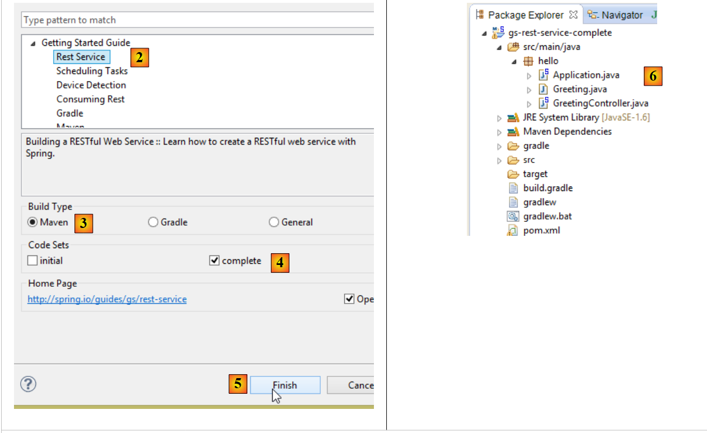
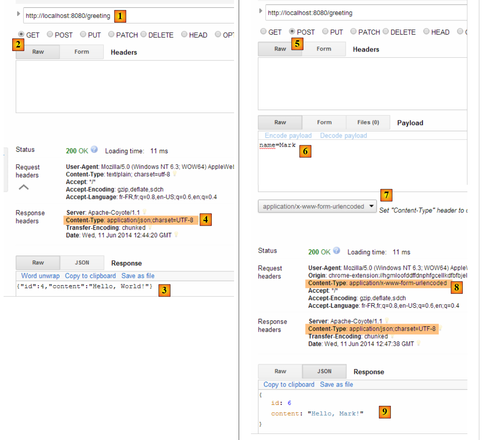
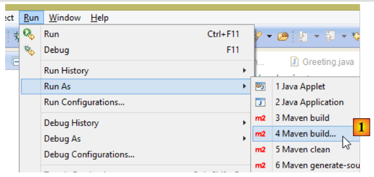

16. Introdução ao Spring MVC
16.1. O papel do Spring MVC numa aplicação web
Vamos situar o Spring MVC no contexto do desenvolvimento de uma aplicação web. Na maioria das vezes, esta será construída com base numa arquitetura multicamadas, como a seguinte:
 |
- a camada [Web] é a camada que interage com o utilizador da aplicação web. O utilizador interage com a aplicação web através de páginas web apresentadas num navegador. O Spring MVC reside nesta camada e apenas nesta camada;
- a camada [business] implementa a lógica de negócio da aplicação, como o cálculo de um salário ou de uma fatura. Esta camada utiliza dados do utilizador através da camada [Web] e do SGBD através da camada [DAO];
- a camada [DAO] (Data Access Objects), a camada [ORM] (Object Relational Mapper) e o controlador JDBC gerem o acesso aos dados no SGBD. A camada [ORM] atua como uma ponte entre os objetos tratados pela camada [DAO] e as linhas e colunas das tabelas numa base de dados relacional. Uma especificação chamada JPA (Java Persistence API) permite abstrair-se do ORM que está a ser utilizado, caso este implemente estas especificações. Será este o caso neste tutorial, pelo que, a partir de agora, nos referiremos à camada ORM como a camada JPA;
- A integração destas camadas é gerida pela estrutura Spring;
16.2. O Modelo de Desenvolvimento Spring MVC
O Spring MVC implementa o padrão arquitetónico MVC (Model–View–Controller) da seguinte forma:
 |
O processamento de um pedido de um cliente decorre da seguinte forma:
- solicitação - os URLs solicitados têm o formato http://machine:port/contexte/Action/param1/param2/....?p1=v1&p2=v2&... O [Front Controller] utiliza um ficheiro de configuração ou anotações Java para «encaminhar» a solicitação para o controlador correto e para a ação correta dentro desse controlador. Para tal, utiliza o campo [Action] do URL. O resto da URL [/param1/param2/...] consiste em parâmetros opcionais que serão passados para a ação. O «C» em MVC aqui refere-se à cadeia [Front Controller, Controller, Action]. Se nenhum controlador puder lidar com a ação solicitada, o servidor web responderá que a URL solicitada não foi encontrada.
- Processamento
- (continuação)
- A ação selecionada pode utilizar os parâmetros que o [Front Controller] lhe passou. Estes podem provir de várias fontes:
- o caminho [/param1/param2/...] da URL,
- os parâmetros [p1=v1&p2=v2] da URL,
- dos parâmetros enviados pelo navegador com o seu pedido;
- Ao processar a solicitação do utilizador, a ação pode necessitar da camada [business] [2b]. Uma vez processada a solicitação do cliente, ela pode desencadear várias respostas. Um exemplo clássico é:
- uma página de erro, se a solicitação não puder ser processada corretamente
- uma página de confirmação, caso contrário
- A ação instrui uma vista específica a renderizar [3]. Esta vista irá apresentar dados conhecidos como o modelo de vista. Este é o «M» em MVC. A ação irá criar este modelo de vista [2c] e instruir uma vista a renderizar [3];
- Resposta - A vista selecionada V utiliza o modelo M criado pela ação para inicializar as partes dinâmicas da resposta HTML que deve enviar ao cliente e, em seguida, envia essa resposta.
Para um serviço web / JSON, a arquitetura anterior é ligeiramente modificada:
 |
- em [4a], o modelo, que é uma classe Java, é convertido numa cadeia JSON por uma biblioteca JSON;
- em [4b], esta cadeia JSON é enviada para o navegador;
Agora, vamos esclarecer a relação entre a arquitetura web MVC e a arquitetura em camadas. Dependendo de como o modelo é definido, estes dois conceitos podem ou não estar relacionados. Considere uma aplicação web Spring MVC de camada única:
 |
Se implementarmos a camada [Web] com Spring MVC, teremos, de facto, uma arquitetura web MVC, mas não uma arquitetura em camadas. Aqui, a camada [Web] tratará de tudo: apresentação, lógica de negócio e acesso aos dados. São as ações que realizarão este trabalho.
Agora, vamos considerar uma arquitetura web multicamadas:
 |
A camada [Web] pode ser implementada sem um framework e sem seguir o modelo MVC. Temos, então, uma arquitetura multicamadas, mas a camada Web não implementa o modelo MVC.
Por exemplo, no mundo .NET, a camada [Web] acima pode ser implementada com ASP.NET MVC, resultando numa arquitetura em camadas com uma camada [Web] de estilo MVC. Feito isto, podemos substituir esta camada ASP.NET MVC por uma camada ASP.NET clássica (WebForms), mantendo o resto (lógica de negócio, DAO, ORM) inalterado. Temos então uma arquitetura em camadas com uma camada [Web] que já não é baseada em MVC.
No MVC, dissemos que o modelo M era o da vista V, ou seja, o conjunto de dados exibidos pela vista V. É dada outra definição do modelo M no MVC:
 |
Muitos autores consideram que o que se encontra à direita da camada [Web] constitui o modelo M do MVC. Para evitar ambiguidades, podemos referir-nos a:
- o modelo de domínio quando nos referimos a tudo à direita da camada [Web]
- o modelo de vista quando nos referimos aos dados apresentados por uma vista V
Daqui em diante, o termo «modelo M» referir-se-á exclusivamente ao modelo de uma vista V.
16.3. Um projeto Web/JSON com Spring MVC
O site [http://spring.io/guides] disponibiliza tutoriais introdutórios para explorar o ecossistema Spring. Vamos seguir um deles para descobrir a configuração do Maven necessária para um projeto Spring MVC.
16.3.1. O projeto de demonstração
 |
- Em [1], importamos um dos guias do Spring;
 |
- em [2], selecionamos o exemplo [Rest Service];
- em [3], selecionamos o projeto Maven;
- em [4], selecionamos a versão final do guia;
- em [5], confirmamos;
- em [6], o projeto importado;
Os serviços Web acessíveis através de URLs padrão que devolvem dados JSON são frequentemente designados por serviços REST (REpresentational State Transfer). Diz-se que um serviço é RESTful se seguir determinadas regras.
Vamos agora examinar o projeto importado, começando pela sua configuração do Maven.
16.3.2. Configuração do Maven
O ficheiro [pom.xml] é o seguinte:
<?xml version="1.0" encoding="UTF-8"?>
<project xmlns="http://maven.apache.org/POM/4.0.0" xmlns:xsi="http://www.w3.org/2001/XMLSchema-instance"
xsi:schemaLocation="http://maven.apache.org/POM/4.0.0 http://maven.apache.org/xsd/maven-4.0.0.xsd">
<modelVersion>4.0.0</modelVersion>
<groupId>org.springframework</groupId>
<artifactId>gs-rest-service</artifactId>
<version>0.1.0</version>
<parent>
<groupId>org.springframework.boot</groupId>
<artifactId>spring-boot-starter-parent</artifactId>
<version>1.2.2.RELEASE</version>
</parent>
<dependencies>
<dependency>
<groupId>org.springframework.boot</groupId>
<artifactId>spring-boot-starter-web</artifactId>
</dependency>
</dependencies>
<properties>
<start-class>hello.Application</start-class>
</properties>
<build>
<plugins>
<plugin>
<groupId>org.springframework.boot</groupId>
<artifactId>spring-boot-maven-plugin</artifactId>
</plugin>
</plugins>
</build>
<repositories>
<repository>
<id>spring-releases</id>
<url>https://repo.spring.io/libs-release</url>
</repository>
</repositories>
<pluginRepositories>
<pluginRepository>
<id>spring-releases</id>
<url>https://repo.spring.io/libs-release</url>
</pluginRepository>
</pluginRepositories>
</project>
- linhas 6–8: as propriedades do projeto Maven. Falta uma tag [<packaging>] que especifique o tipo de ficheiro produzido pela compilação do Maven. Na sua ausência, é utilizado o tipo [jar]. A aplicação é, portanto, uma aplicação executável baseada em consola, e não uma aplicação web, caso em que a embalagem seria [war];
- linhas 10–14: O projeto Maven tem um projeto pai [spring-boot-starter-parent]. Este define a maioria das dependências do projeto. Estas podem ser suficientes, caso em que não são adicionadas dependências adicionais, ou podem não ser, caso em que as dependências em falta são adicionadas;
- Linhas 17–20: O artefacto [spring-boot-starter-web] inclui as bibliotecas necessárias para um projeto de serviço web Spring MVC onde não são geradas vistas. Este artefacto inclui um número muito grande de bibliotecas, incluindo as destinadas a um servidor Tomcat incorporado. A aplicação será executada neste servidor;
As bibliotecas incluídas nesta configuração são numerosas:
 |  |
Acima, vemos os três arquivos do servidor Tomcat.
16.3.3. A arquitetura de um serviço Spring [web / JSON]
Para um serviço web/JSON, o Spring MVC implementa o modelo MVC da seguinte forma:
 |
- Em [4a], o modelo — que é uma classe Java — é convertido numa cadeia JSON por uma biblioteca JSON;
- em [4b], esta cadeia JSON é enviada para o navegador;
16.3.4. O controlador C
 |
A aplicação importada tem o seguinte controlador:
package hello;
import java.util.concurrent.atomic.AtomicLong;
import org.springframework.web.bind.annotation.RequestMapping;
import org.springframework.web.bind.annotation.RequestParam;
import org.springframework.web.bind.annotation.RestController;
@RestController
public class GreetingController {
private static final String template = "Hello, %s!";
private final AtomicLong counter = new AtomicLong();
@RequestMapping("/greeting")
public Greeting greeting(@RequestParam(value = "name", defaultValue = "World") String name) {
return new Greeting(counter.incrementAndGet(), String.format(template, name));
}
}
- Linha 9: A anotação [@RestController] torna a classe [GreetingController] um controlador Spring, o que significa que os seus métodos estão registados para tratar de URLs. Já vimos a anotação semelhante [@Controller]. O tipo de retorno dos métodos desse controlador era [String], que era o nome da vista a apresentar. Aqui, é diferente. Os métodos de um [@RestController] devolvem objetos que são serializados para serem enviados ao navegador. O tipo de serialização realizada depende da configuração do Spring MVC. Aqui, serão serializados para JSON. É a presença de uma biblioteca JSON nas dependências do projeto que faz com que o Spring Boot configure automaticamente o projeto desta forma;
- linha 14: a anotação [@RequestMapping] especifica a URL tratada pelo método, neste caso a URL [/greeting];
- linha 15: já explicámos a anotação [@RequestParam]. O resultado devolvido pelo método é um objeto do tipo [Greeting].
- linha 12: um inteiro longo de tipo atómico. Isto significa que suporta acesso simultâneo. Várias threads podem querer incrementar a variável [counter] ao mesmo tempo. Isto será tratado corretamente. Uma thread só pode ler o valor do contador depois de a thread que o está a modificar ter concluído a sua modificação.
16.3.5. O modelo M
O modelo M produzido pelo método anterior é o seguinte objeto [Greeting]:
 |
package hello;
public class Greeting {
private final long id;
private final String content;
public Greeting(long id, String content) {
this.id = id;
this.content = content;
}
public long getId() {
return id;
}
public String getContent() {
return content;
}
}
A transformação JSON deste objeto irá criar a string {"id":n,"content":"text"}. Por fim, a string JSON produzida pelo método do controlador terá o seguinte formato:
ou
16.3.6. Execução
 |
A classe [Application.java] é a classe executável do projeto. O seu código é o seguinte:
package hello;
import org.springframework.boot.autoconfigure.EnableAutoConfiguration;
import org.springframework.boot.SpringApplication;
import org.springframework.context.annotation.ComponentScan;
@ComponentScan
@EnableAutoConfiguration
public class Application {
public static void main(String[] args) {
SpringApplication.run(Application.class, args);
}
}
Já nos deparámos com este código e explicámo-lo no exemplo anterior. Vamos executar o projeto:
 |
Recebemos os seguintes registos na consola:
- linha 13: o servidor Tomcat inicia na porta 8080 (linha 12);
- linha 17: o servlet [DispatcherServlet] está presente;
- linha 20: o método [GreetingController.greeting] foi descoberto;
Para testar a aplicação web, solicitamos a URL [http://localhost:8080/greeting]:
 |  |
Recebemos a cadeia JSON esperada. Pode ser interessante visualizar os cabeçalhos HTTP enviados pelo servidor. Para tal, utilizaremos a extensão do Chrome chamada [Advanced Rest Client] (Chrome / Ctrl-T / menu [Aplicações] / [Advanced Rest Client] - ver Apêndices, parágrafo 23.11):
 |
- em [1], o URL solicitado;
- em [2], é utilizado o método GET;
- em [3], a resposta JSON;
- em [4], o servidor indicou que estava a enviar uma resposta no formato JSON;
- em [5], é solicitada a mesma URL, mas desta vez utilizando uma solicitação POST;
- em [7], a informação é enviada para o servidor no formato [urlencoded];
- em [6], o parâmetro name com o seu valor;
- em [8], o navegador informa ao servidor que está a enviar dados [urlencoded];
- em [9], a resposta JSON do servidor;
16.3.7. Criação de um arquivo executável
Vamos agora criar um arquivo executável:
 |
 |
- em [1]: executamos um alvo do Maven;
- em [2]: existem dois objetivos: [clean] para eliminar a pasta [target] do projeto Maven, [package] para a regenerar;
- em [3]: a pasta [target] gerada ficará localizada nesta pasta;
- em [4]: o alvo é gerado;
Nos registos que aparecem na consola, é importante verificar se o [spring-boot-maven-plugin] está listado. Este é o plugin que gera o arquivo executável (ver [pom.xml] abaixo):
<build>
<plugins>
<plugin>
<groupId>org.springframework.boot</groupId>
<artifactId>spring-boot-maven-plugin</artifactId>
</plugin>
</plugins>
</build>
Num prompt de comando, navegue até à pasta gerada:
D:\Temp\wksSTS\gs-rest-service\target>dir
...
11/06/2014 15:30 <DIR> classes
11/06/2014 15:30 <DIR> generated-sources
11/06/2014 15:30 11 073 572 gs-rest-service-0.1.0.jar
11/06/2014 15:30 3 690 gs-rest-service-0.1.0.jar.original
11/06/2014 15:30 <DIR> maven-archiver
11/06/2014 15:30 <DIR> maven-status
...
- linha 5: o arquivo gerado;
Este arquivo é executado da seguinte forma:
D:\Temp\wksSTS\gs-rest-service-complete\target>java -jar gs-rest-service-0.1.0.jar
. ____ _ __ _ _
/\\ / ___'_ __ _ _(_)_ __ __ _ \ \ \ \
( ( )\___ | '_ | '_| | '_ \/ _` | \ \ \ \
\\/ ___)| |_)| | | | | || (_| | ) ) ) )
' |____| .__|_| |_|_| |_\__, | / / / /
=========|_|==============|___/=/_/_/_/
:: Spring Boot :: (v1.1.0.RELEASE)
2014-06-11 15:32:47.088 INFO 4972 --- [ main] hello.Application
: Starting Application on Gportpers3 with PID 4972 (D:\Temp\wk
sSTS\gs-rest-service-complete\target\gs-rest-service-0.1.0.jar started by ST in
D:\Temp\wksSTS\gs-rest-service-complete\target)
...
Agora que a aplicação web está em execução, pode aceder-lhe utilizando um navegador:
 |
16.3.8. Implantação da aplicação num servidor Tomcat
Tal como fizemos no projeto anterior, modificamos o ficheiro [pom.xml] da seguinte forma:
<?xml version="1.0" encoding="UTF-8"?>
<project xmlns="http://maven.apache.org/POM/4.0.0" xmlns:xsi="http://www.w3.org/2001/XMLSchema-instance"
xsi:schemaLocation="http://maven.apache.org/POM/4.0.0 http://maven.apache.org/xsd/maven-4.0.0.xsd">
<modelVersion>4.0.0</modelVersion>
<groupId>org.springframework</groupId>
<artifactId>gs-rest-service</artifactId>
<version>0.1.0</version>
<packaging>war</packaging>
...
</project>
- Linha 9: Deve especificar que está a gerar um ficheiro WAR (Web Archive);
Deve também configurar a aplicação web. Se não existir um ficheiro [web.xml], isto é feito utilizando uma classe que estende [SpringBootServletInitializer]:
 |
A classe [ApplicationInitializer] é a seguinte:
package hello;
import org.springframework.boot.builder.SpringApplicationBuilder;
import org.springframework.boot.context.web.SpringBootServletInitializer;
public class ApplicationInitializer extends SpringBootServletInitializer {
@Override
protected SpringApplicationBuilder configure(SpringApplicationBuilder application) {
return application.sources(Application.class);
}
}
- linha 6: a classe [ApplicationInitializer] estende a classe [SpringBootServletInitializer];
- linha 9: o método [configure] é reescrito (linha 8);
- linha 10: é fornecida a classe que configura o projeto;
Para executar o projeto, proceda da seguinte forma:
 |
- Em [1-2], execute o projeto num dos servidores registados no IDE Eclipse;
Depois de fazer isso, pode aceder ao URL [http://localhost:8080/gs-rest-service/greeting/?name=Mitchell] num navegador:
 |
16.4. Conclusão
Apresentámos um tipo de projeto Spring MVC em que a aplicação web envia um fluxo JSON para o navegador. Vamos agora desenvolver uma aplicação web/JSON para expor na web a base de dados [dbproduitscategories] estudada nos capítulos anteriores.